11 November 2026
Working manuscript. Not peer reviewed. Review edition updated 11 November 2026 using the final available samples and corrected answer scoring.
Attribution graphs are used to investigate how language models produce predictions. We asked whether feature sharing between graphs reflects the fact being queried, the predicted answer, or both. We measured feature sharing using Jaccard overlap in Gemma-2-2B, Qwen3-1.7B, and Qwen3-4B, with 8, 10, and 12 included evaluation facts, respectively. Rewordings of the same fact had higher mean overlap than questions about other facts in all three analyzed samples, including after equalizing feature counts. To separate the requested fact from the response, we tested Qwen3-4B with questions about six country pairs. These questions used the same words and tokens within each pair while varying the queried country and which A/B letter represented the correct capital. All 48 predicted letters were correct. The prespecified mean difference between same-country and different-country overlap was 0.0303 (95% block-bootstrap interval 0.0265–0.0338). The same-country overlap advantage was 0.0628 when answer letters matched but near zero (-0.0022) when different letters represented the correct answers. In eight selected error comparisons from one country pair, wrong-answer graphs shared more features with correct predictions giving the same response than with correct predictions for the intended country. An analysis of 16 historical-date graphs from two event pairs, including five incorrect predictions, also found similar graphs when an unchanged response letter selected different years. Together, these findings show that graph similarity can track the predicted response without establishing correct factual processing.
Knowing whether a language model gives a correct answer does not explain how it arrived at that answer. Mechanistic interpretability seeks to address this question by examining the computations inside a model [1]. For factual questions, this raises a more specific question: when different prompts ask about the same fact, what remains similar in the model’s internal activity?
Attribution graphs show patterns of activity inside a model and estimate how those patterns contribute to its prediction. These learned patterns are called features [1]. Graph construction retains features according to their influence on the outputs being explained [1]. The question is therefore what feature sharing across such graphs can tell us about the relationship between the questions and their answers. Previous research has examined how model computations vary across prompts [2]. Studies of multiple-choice questions have also shown that rearranging answer options can change which answer a model selects [5]. These findings motivate examining how differences between questions and their predicted answers relate to the features found in attribution graphs.
Comparing these graphs requires distinguishing what the questions and answers have in common. For example, two rewordings of a question about France’s capital both expect Paris. Their graphs might share features because they ask about the same fact, use some of the same words, or predict the same answer. Does greater feature overlap still distinguish questions about the same fact when the predicted response changes? We therefore need comparisons that ask about the same fact while changing the model’s required output.
We initially hypothesized that, within each model, differently worded questions about the same fact would share more attribution-graph features than questions about different facts. We tested this association in Gemma-2-2B, Qwen3-1.7B, and Qwen3-4B. We measured feature sharing using Jaccard similarity, our measure of feature overlap: the proportion of all distinct features across two graphs that appears in both. It compares the features present, not the connections between them.
We then used Qwen3-4B to examine this association with stronger controls for shared words and answers. For multiple-choice questions using the same two countries, we kept the words and their counts the same while varying which country was asked about and whether the model had to answer A or B. Changing the letter assigned to a capital allowed the factual answer to remain the same while the required response changed. We also examined selected incorrect predictions, comparing their graphs with correct predictions for the intended country and correct predictions giving the same answer for another country.
Feature overlap was associated with both the relationship between questions and the answer the model predicted. We next describe the model samples, question designs, and graph comparisons used to evaluate these relationships.
We organized the study around four comparisons (Figure 1). First, we compared reworded questions about the same fact with questions about different facts across all three models. Second, we gave Qwen3-4B multiple-choice questions and swapped the capitals assigned to A and B. This changed the required answer letter without changing the capital being asked for. We then tested whether questions about the same country still shared more graph features than questions about different countries. Third, also using Qwen3-4B, we examined attribution graphs for incorrect predictions, referred to here as error graphs. Each error graph was compared with two graphs for correct predictions: one giving the correct answer for the intended country, and one giving the same answer as the error, but in a context where that answer was correct. Fourth, we used historical-date questions to distinguish the predicted A/B letter from the year it selected, retaining both correct and incorrect predictions. The four analyses used distinct question sets and were evaluated separately.
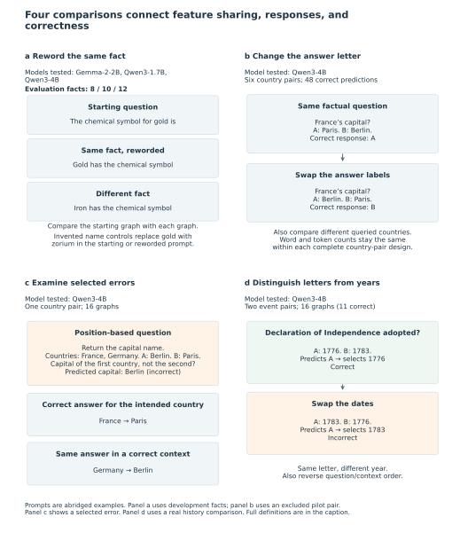
Figure 1. Four comparisons connect feature sharing, responses, and correctness. A, Compare a factual question with its rewording and with other-fact questions in the same subject and evaluation set. The final samples contain 8 Gemma-2-2B, 10 Qwen3-1.7B, and 12 Qwen3-4B evaluation facts. Gold is the chemical element. Gold, iron, and invented name zorium are development examples, not the evaluation questions plotted in Figure 2. B, In Qwen3-4B, vary the queried country, capital-to-A/B mapping, and wording while preserving word and token counts within each country pair. All 48 predictions across six evaluation pairs were correct. The France/Germany design example is a pilot pair excluded from evaluation. C, Compare a selected error graph with correct predictions for the intended country and for another country giving the same answer as the error. This diagnostic includes 16 graphs from one country pair and two response formats, with shared controls. D, Swap dates assigned to A and B or reverse question/context order. All 16 history graphs from two event pairs are included, with 11 correct and five incorrect predictions. The displayed Declaration of Independence example retains A while selecting 1776 or 1783. Prompts in this overview are abridged to show the comparison; Figure 6 gives exact history prompts. Answers denote highest-probability next tokens. Arrows show comparisons, not causes. Each analysis retains its own question set, inclusion rules, and unit of analysis.
We analyzed attribution graphs from three language models: Gemma-2-2B, Qwen3-1.7B, and Qwen3-4B. Neuronpedia ran the models and generated the graphs remotely. We analyzed the saved graphs locally, without running the models on our own hardware. Within each model, we compared feature sharing between reworded questions about the same fact with feature sharing between questions about different facts. We used the same Jaccard similarity measure and feature-exclusion rules across all three models, providing a separate test of the same hypothesis in each model.
The question/control design included 30 facts, with ten each from chemistry, geography, and history. Each fact had a starting question, a reworded question asking for the same fact, and two invented name controls. These controls replaced the real name with an invented name while preserving either the starting or reworded sentence pattern. Within each subject, five facts were assigned to development and five to evaluation. All four question versions for a fact stayed in the same set. Development questions supported method development and diagnostic checks; evaluation questions provided the primary test of whether rewordings of the same fact shared more features than questions about different facts.
| Model | Question/control graphs collected / planned | Fact/wording graphs collected / planned | Evaluation facts and subjects |
|---|---|---|---|
| Gemma-2-2B | 120/120 | 27/27 | 8: chemistry 5, history 3 |
| Qwen3-1.7B | 91/120 | Not collected | 10: chemistry 5, geography 5 |
| Qwen3-4B | 120/120 | 27/27 | 12: chemistry 5, geography 5, history 2 |
For Qwen3-1.7B, the 91 collected graphs comprised 40 chemistry, 40 geography, and 11 history graphs. Chemistry and geography each had all four versions for ten facts. The service rejected 29 history requests that exceeded its 10-input-token limit, leaving no history fact with all four required versions. These are collection failures, not incorrect predictions. Applying the same inclusion rules across subject areas yielded five chemistry and five geography evaluation facts; development questions were analyzed separately.
Qwen3-4B supplied all 120 question/control graphs. The separate fact/wording experiment, described in Section 2.3, supplied 27 graphs each for Gemma-2-2B and Qwen3-4B. These two designs therefore contain 385 available graphs in total. The additional Qwen3-4B answer-letter and selected-error studies contributed 48 and 16 graphs, respectively, and are described separately in Sections 2.5–2.6.
Only these three models were tested. Section 2.8 describes the Qwen3-1.7B analysis and verification; the protocol and analysis-planning records are retained with the reproducibility materials.
Collection and inclusion counts are separated in the sample-accounting table. All three models contribute chemistry comparisons; geography and history do not provide complete three-model comparisons. Unused questions are not automatically incorrect answers: missing controls, partial next tokens, and lack of a comparison partner are distinct exclusion reasons.
We measured feature sharing between questions using Jaccard similarity, our measure of feature overlap. This is the number of shared features divided by the total number of distinct features across both graphs. The score ranges from zero, when no features are shared, to one, when both graphs contain the same features. It compares the features present, not the connections between them.
For each graph, we identified distinct learned features using the
tuple (feature family, layer, feature ID). Matching
numerical IDs in different layers or feature families remained distinct.
A feature that appeared at multiple positions in the input was counted
once. We excluded input representations (embeddings), output prediction
scores (logits), and reconstruction-error nodes, which represent
activity not captured by the learned features. We also excluded nodes
with missing or duplicated graph-node identifiers. Features were
compared only between graphs from the same model.
For each starting question, we calculated Jaccard overlap with its factual rewording. We then calculated its overlap with the reworded questions for every other included fact from the same model, subject, and development or evaluation set. Our primary outcome was the same-fact overlap minus the average of these other-fact overlaps. A positive difference therefore indicated greater feature sharing with the same-fact rewording. Figure S8 summarizes the workflow.
Let T_i and P_i denote the feature sets from the graphs for a starting question and its factual rewording, respectively. Their same-fact overlap minus the average other-fact overlap is:
M_i = Jaccard(T_i, P_i) - mean_{j ≠ i} Jaccard(T_i, P_j),
where j includes every other included fact in the same model, subject area, and development or evaluation set.
A fact was included only when all four question and control graphs
were available. For both factual prompts, the model’s
highest-probability next token had to give the complete accepted answer
after removing leading and trailing whitespace, such as spaces or line
breaks. Accepted answers included the registered spellings
Maria and María for Columbus’s flagship [8,9],
with Unicode-equivalent forms treated identically. At least one other
fact also had to meet these conditions within the same model, subject
area, and development or evaluation set, providing the other-fact
comparison. Partial answer tokens did not qualify.
The spelling rule corrected a literal-text scoring error identified during the audit. We applied it across all 170 available factual-prompt outputs, changing one answer classification, and used the corrected inclusion decisions throughout the reported analyses. The original scoring decisions remain in the audit record. Prompts, predicted tokens, graph features, and development/evaluation assignments were unchanged; other accents, synonyms, and partial answers were not accepted automatically.
Zero means equal overlap; negative values mean more shared features in the other-fact comparison. The outcome is a difference between Jaccard scores, not a percentage increase. Other designs below specify their own subtraction; weighted cosine comparisons are called differences in weighted similarity rather than feature overlap.
For each model, we summarized the evaluation-fact differences by their mean and a descriptive 95% percentile bootstrap interval, using 10,000 resamples of the calculated fact-level differences with replacement. Exact one-sided sign-flip tests assessed whether the mean difference was greater than zero. Complementary within-domain fact-label permutations assess matched assignment without treating graph pairs as independent samples. Facts reuse comparators, sign-flip assumptions require care, and the same facts recur across models: 8+10+12 represents 30 model-specific fact observations, not 30 unique independent facts. No pooled model-ranking test is performed.
To examine how feature sharing varied with the requested fact and its wording, we analyzed three facts from each of three subject areas in Gemma-2-2B and Qwen3-4B. Each fact had an original question and two rewordings, giving 27 graphs per model. We labeled these versions “original,” “alternative 1,” and “alternative 2.” We compared questions about the same fact across different versions, and questions about different facts within the same labeled version. Both comparisons used questions differing in fact and version as their baseline. The version labels did not imply identical sentence patterns across facts. We calculated overlap differences within each subject area and then averaged across areas, using permutation tests that preserved these groupings. Their relative sizes were descriptive, not tests that wording mattered more than the fact being asked about or that the models differed.
We compared factual rewordings against invented name prompts, then checked whether the pattern persisted when their predicted outputs had the same general form. The controls used invented names, such as “zorium” instead of gold. One control was based on the starting sentence pattern; the other used a reworded version. For each control, we subtracted its feature overlap with the starting question from the overlap between the starting question and its factual rewording. Positive differences therefore favored the factual rewording. We repeated these comparisons using only controls whose highest-probability next token fell into the same broad category as the starting question’s: containing letters or numbers, whitespace only, or punctuation/symbols only. This matched output category, not the exact token, its meaning, or its probability.
We checked the integrity of the saved graphs and reproduced the recorded overlap calculations. File checksums covered all 385 graphs in the question/control and fact/wording datasets. We compared counts of distinct features with the saved audits and reproduced the recorded overlap differences for each fact to an absolute tolerance of 10⁻¹². Section 2.8 and the reproducibility records describe the Qwen3-1.7B verification.
Feature counts. We tested whether same-fact overlap remained higher when the graphs contained equal numbers of features. Within each model and subject area, we set K to the smallest feature count among the starting and reworded evaluation graphs. We randomly sampled K features from each graph without replacement, then repeated the analysis using half that number, rounded down. Across 200 repetitions with recorded fixed seeds, each sampled graph was reused in all its comparisons. We averaged the overlap differences for each fact across repetitions and calculated descriptive 95% bootstrap intervals using 10,000 fact-level resamples. Variation across sampling repetitions and the model-specific seeds are retained in the reproducibility tables. This check equalized feature counts but did not remove differences in how features entered the exported graphs or in shared wording.
Shared words and answer identity. We looked for questions about different facts that shared a comparable amount of wording with the starting question. We then applied a stricter check that also matched the number of graph features. We measured word sharing using Jaccard similarity between sets of unique words containing letters or numbers, ignoring capitalization and retaining common words. Within each model and evaluation subject area, we applied three alternative matching rules. The first retained other-fact questions whose word-overlap score with the starting question was at least as high as the same-fact pair’s score. The second required those scores to differ by no more than 0.05. The third used the same 0.05 limit and also required the other-fact rewording’s graph to contain between 80% and 125% as many features as the factual rewording’s graph. These rules matched word-overlap scores and, in the third check, graph feature counts; they did not require identical words or features. We averaged all qualifying other-fact comparisons under each rule. When none qualified, we reported the comparison as not estimable, rather than zero. Matching thresholds were not relaxed after inspection. We separately recorded whether each comparison shared the expected answer; answer matching was not an inclusion requirement.
Tokenizer audit. We checked whether the predicted next token contained the expected answer or only a compatible beginning. We recorded the versions and file checksums of the official Qwen tokenizers, which convert text into model tokens. We checked their agreement with the saved prompt tokens and highest-probability predictions. We then encoded each prompt followed by its expected answer, allowing zero or one separating space and requiring the prompt’s token sequence to remain unchanged. We distinguished complete expected answers, compatible beginnings, whitespace-only matches, mismatches, and unresolved checks. A compatible beginning did not verify that the model would complete the answer correctly. These checks also could not establish the exact tokenizer version used during graph collection. Gemma’s official tokenizer download returned an authorization error (HTTP 401), leaving its tokenizer-based audit unavailable. No alternative download sources or model weights were used [3,4].
We also checked whether the fact-by-wording results persisted when every question in a group met the expected-next-token rule. Each group contained three facts from one subject area, each asked in three versions. A group qualified within a model only when all nine questions had highest-probability next tokens matching the expected text after removing leading and trailing whitespace. We recalculated overlap differences for these complete groups and reported them separately from the original analysis. We did not select individual passing questions from groups that failed the rule.
We tested whether questions about the same country still shared more features when the required answer letter changed. Using Qwen3-4B’s non-thinking chat format, we presented questions containing two countries and two capitals labeled A and B. For example, France’s capital required A when Paris was labeled A, but B when Paris was labeled B. We varied the country asked about, the word order, and the capital-to-letter assignment while keeping the words and token counts identical within each country pair. France/Germany illustrated the design in the preliminary check; six other country pairs formed the evaluation.
We measured same-country feature sharing separately when the answer letter stayed the same and when it changed. Each evaluation country pair contributed eight graphs, covering both countries, both A/B assignments, and two question wordings, for 48 graphs overall. Within each pair, we compared graphs across the two wordings and subtracted different-country overlap from same-country overlap in each answer-letter condition. We averaged these two differences within each pair, then averaged across pairs for the prespecified primary outcome. Uncertainty used the six country pairs, not 48 independent graphs, with a 95% bootstrap interval from 10,000 resamples. An exact conditional correspondence test evaluated 4,096 allowed assignments of country matches within answer-letter groups. Bonferroni correction accounted for three planned tests across models and prompt formats.
Earlier preliminary results informed this follow-up, but its rules were fixed before collecting the evaluation graphs. In the completed plain-completion checks, Qwen3-4B chose A on all eight questions, giving four correct labels. Gemma produced the correct capitals but none of the eight requested letters. The three planned tests therefore comprised the original Qwen and Gemma setups and the revised Qwen chat setup. Preliminary outcomes remained separate from the evaluation results. The revised experiment matched the available words and tokens, but differences in word order, answer-option assignments, and country roles remained part of the comparison.
Research on position-based retrieval has documented difficulties identifying items by list position, particularly when counting backward [7]. Our position-based analysis asked about a country’s position in a list while varying the queried country, list order, answer mapping, and wording. Its prespecified accuracy requirement had to be met in a 16-item pilot before collecting evaluation graphs. After the pilot failed, we conducted an explicitly exploratory diagnostic of selected errors; this was not a replacement evaluation cohort.
We investigated selected cases by generating attribution graphs and checking that the incorrect predictions occurred again. For example, with France listed before Germany, asking for the first country’s capital incorrectly produced Berlin. Naming France directly produced Paris, whereas naming Germany produced Berlin. Both named-country predictions were correct for their respective questions. Comparing their graphs with the incorrect prediction’s graph let us ask whether feature sharing was greater with the intended fact (France’s capital is Paris) or with the answer the model actually predicted, Berlin.
The diagnostic contained 20 next-token previews: four literal/replay positive controls and four selected France/Germany cases varied by how the country was identified (its name or list position) and by response format (A/B letter or capital name). These cases were selected because the correct answer conflicted with choosing an answer option by its position. We fixed the 16 diagnostic prompts before generating their graphs. Each wrong-answer graph was compared with two correct-answer graphs: one for the intended country and one producing the same answer as the error. Both controls preserved the option layout and country-list order. The position-based and named-country prompts differ in wording, length, and repeated names; unlike the matched-choice experiment, their word and token inventories are not identical.
Graph settings were maxNLogits=10, desiredLogitProb=0.99, nodeThreshold=0.8, edgeThreshold=0.85, and maxFeatureNodes=5000, using hosted Qwen3-4B with the recorded transcoder source. Exact prompts and token sequences, source/settings, checksums, identifier integrity, and observed answers were audited. Wrong answers were deliberately retained. All comparisons report feature-set Jaccard, exported-influence-weighted cosine, and an equal-feature-count sensitivity using 200 repetitions with fixed seeds. Direct incoming edges to the observed answer logit were summarized by source type and token location, preserving signs and absolute weights. Display panels retain the ten largest absolute direct edges and the ten largest upstream edges into those displayed predecessors; full tables retain the remaining edges.
These selected cases concern two facts in one country pair, with reused controls. We report descriptive comparisons without confirmatory p-values or population confidence intervals. The country-location weight ratio discussed below was an additional descriptive inspection of the archived role tables, not a prespecified primary endpoint. All outcomes concern the top next token under the hosted non-thinking setup; they do not independently establish full generated-answer behavior [6]. Local provenance checks also do not independently certify hosted-weight identity.
After inspecting the matched-choice results, we directly compared the same-label and changed-label fact contrasts across the six country-pair blocks. We report the mean paired difference, a 20,000-resample block-bootstrap interval, a Student-t interval, and a two-sided exact block sign-flip test. These summaries assume independent blocks; the sign-flip null additionally assumes symmetric block contrasts. This added test is exploratory and is distinct from the original conditional correspondence test. The 4,096 correspondence assignments are null configurations within six blocks, not 4,096 independent observations.
The tests answer different questions:
| Test | Question | Reference distribution and interpretation |
|---|---|---|
| Prespecified conditional correspondence test | Is the average of the two fact contrasts greater than expected under reassigned fact correspondence? | Reassign queried-fact correspondence across wording versions within each answer-label group: four assignments per country pair and 4096 across six pairs. The reference null treats those assignments as exchangeable conditional on the label and word inventory. It tests correspondence under that null, not a causal effect isolated from word order or country roles. |
| Exploratory block sign-flip test | Is the same-letter fact contrast different from the changed-letter fact contrast? | Flip the sign of each of six country-pair differences, assuming independent blocks and symmetric differences under the null. The two-sided test concerns the difference between conditions, not their average. |
The conditional test’s small p-value describes the specified reassignment null; it does not establish that the prompts are exchangeable for every substantive hypothesis. Residual order and role differences constrain interpretation. The question/control comparisons also reuse other-fact comparators, so their resampling results are reported alongside the within-domain correspondence tests rather than as independent replications.
As graph-location sensitivities, we removed feature nodes at the final prediction context position, in the last quarter of observed feature layers, or both, before collapsing feature identities. Empty representations are unavailable rather than assigned zero overlap. These filters test concentration of the measured association; they are not causal ablations, and retained graphs remain conditioned on the generated output. We applied the same filters to the selected failure comparisons without attaching population p-values to their dependent triples.
We also examined historical-date questions in Qwen3-4B using two event pairs: adoption of the US Declaration of Independence and signing of the Treaty of Paris, and the launches of Sputnik 1 and Explorer 1. Each pair had eight prompts combining the queried event, assignment of dates to A and B, and question/context order, with identical word and token inventories within the pair. We collected all 16 graphs and retained both correct and incorrect predictions. Each predicted letter was translated into the year assigned to it, separating agreement on the response letter from agreement on the selected date.
We calculated all 28 unordered graph comparisons within each event pair. Eight comparisons changed only the A/B date assignments, and eight changed only question/context order, across the two pairs. We grouped these comparisons by the letter actually predicted, separately from the letter required for a correct answer. Jaccard overlap used the feature identities in Section 2.2. Additional checks used influence-weighted cosine, the graph-location filters above, and 200 equal-feature-count subsamples at K and half K within each event pair. The analysis plan was recorded before graph collection but after the prompts’ behavioral outcomes were known. With two selected event pairs and reused graphs, we report descriptive comparisons rather than population confidence intervals or significance tests. Supporting analysis A7 preserves the original stopped 160-graph study, which this additional analysis did not reopen.
We analyzed the combined 91-graph Qwen3-1.7B dataset using the representation, inclusion rules, comparisons, and checks in Sections 2.2–2.4. Settings were recorded before calculating the estimates but after earlier findings were known. The analysis was therefore exploratory rather than an independent confirmatory replication.
Graph files retained their recorded transcoder and LoRSA feature sources. Desired cumulative output probability was 0.99 for the completion requests; some archived files used 0.95 output coverage. These differences were preserved, rather than assuming identical export settings or unchanged hosted model versions. Full graph settings and verification records are provided in Supporting methods A5.1.
Holm correction covered 15 secondary sign-flip tests across four similarity measures and four comparator types, excluding the primary Jaccard/average-other-fact comparison. The full test family is defined in A5.1. Output-type-matched subsets, reconstruction-error-inclusive and equal-feature-count checks, and subject-specific summaries were outside this correction family. Shared comparison questions limit the interpretation of bootstrap intervals and sign-flip tests; label permutations assume exchangeable factual pairings within each subject area. These analyses do not separate shared-word or expected-answer differences from fact identity.
Across all three models, every included evaluation question had greater Jaccard overlap with its own rewording than its average overlap with rewordings of other facts (Figure 2a). Mean differences in feature overlap were 0.170 for Gemma-2-2B (descriptive 95% interval [0.085, 0.276], n=8), 0.0894 for Qwen3-1.7B ([0.0820, 0.0976], n=10), and 0.218 for Qwen3-4B ([0.150, 0.307], n=12). Exact sign-flip p-values were 0.00390625, 0.0009765625, and 0.000244140625; fact-label permutation p-values were 0.00139, 0.0000694, and 0.0000347, respectively. The pattern was consistent within each model. Differences in subject coverage and reuse of facts across models prevent interpreting these effect sizes as a model ranking.
For Qwen3-1.7B, the pattern was present in both subjects available for evaluation. All five chemistry and all five geography evaluation facts had positive overlap differences, with subject means of 0.0854 and 0.0935 (Figure 2b). History could not be evaluated for this model because no history fact had a complete set of factual and control graphs (Supplementary Figure S7a). Detailed analyses are provided in Supporting analysis A5.
Qwen3-4B included five chemistry, five geography, and two history facts (Figure 2b). The history questions asked about Columbus’s flagship and the assassinated Archduke Franz Ferdinand. Their same-fact minus other-fact overlap differences were 0.601 and 0.395, respectively, averaging 0.498 (Supplementary Figure S9a). Each used the other as its comparison partner, so this result describes the two questions rather than independent replications across history.
Higher overlap could reflect more than the fact being asked about: reworded questions may also share words and the expected answer. We therefore examined whether these similarities could explain the pattern.
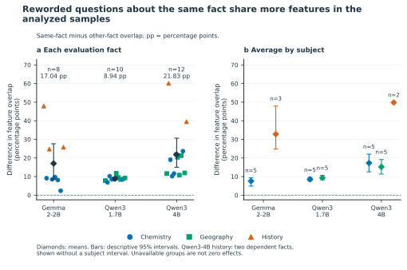
Figure 2. Reworded questions about the same fact share more features in the analyzed samples. A, Points represent questions reserved for evaluation that meet the complete-set and accepted-answer criteria. The difference in feature overlap is same-fact rewording overlap minus average other-fact rewording overlap within the same subject and test set. For example, overlaps of 0.50 and 0.30 give a difference of +0.20. These example numbers are not measured results. Positive, zero, and negative values indicate more, equal, and less overlap with the same fact; units are Jaccard differences, not percentage increases. B, Subject averages. Colors and shapes identify subjects; diamonds show averages and bars show descriptive 95% intervals from 10,000 question-bootstrap resamples. n counts questions. Qwen3-4B history has two facts sharing their only comparison partner, so its subject mean is shown without an interval. Means are 0.170 for Gemma-2-2B (8 questions), 0.089 for Qwen3-1.7B (10), and 0.218 for Qwen3-4B (12; pooled interval 0.150–0.307). Qwen3-1.7B includes five chemistry and five geography questions, with a descriptive pooled interval of 0.082–0.098. Repeated facts and different subject coverage preclude a model ranking; shared words and answers remain coupled to fact identity. Missing groups are unavailable, not zero. Figure S9 details the two Qwen3-4B history comparisons.
To separate factual identity from shared wording, we looked for other-fact questions that matched each same-fact pair’s word overlap. None met any of the three word-matching or joint word/feature-count rules: 0/8 Gemma, 0/10 Qwen3-1.7B, and 0/12 Qwen3-4B. Even the most word-overlapping other-fact prompt scored at least 0.1806 below the same-fact rewording across these samples (Supplement Figure S4). The gap was not a borderline threshold result.
Answer identity was coupled to factual identity as well: none of the 108 directed other-fact comparisons shared the expected answer, whereas same-fact pairs did. This comparison changes the fact, word overlap, and expected answer together. It establishes their combined association with shared features, leaving their separate contributions unresolved.
When controls were matched only by broad next-token category, overlap differences relative to same-pattern invented name controls were -0.069 (Gemma, n=2), -0.0109 (Qwen3-1.7B, n=9), and +0.096 (Qwen3-4B, n=10). Differences relative to reworded invented name controls were positive in all three models (Figure 3). Qwen3-4B’s history controls predicted commas instead of names, so ten of its twelve facts met this additional matching requirement. For Qwen3-1.7B, the mean was +0.1059 across ten reworded-control comparisons. Before output-type matching, eight of its ten evaluation questions shared more features with the same-pattern invented name control than with their factual rewording; seven of nine did so in the matched subset. All ten favored the factual rewording over the reworded invented name control. These contrasting results motivate a follow-up that preserves the available words while varying the requested country and the answer letter. The descriptive question-version comparison is reported in Supporting analysis A4 (Supplementary Figure S10).
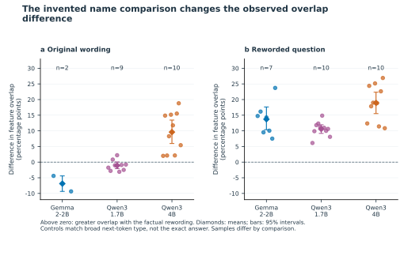
Figure 3. The invented name comparison changes the observed overlap difference. Replace the real name with an invented name, retaining the starting wording (A) or rewording it (B). For each test question, subtract overlap with the invented name prompt from overlap with the factual rewording. Positive values favor the factual rewording; negative values favor the invented name control. Colors identify models, points show questions, diamonds show means, and bars show saved 95% question-bootstrap intervals; n counts included questions. Panel A means are -0.069 (n=2), -0.011 (n=9), and +0.096 (n=10) for Gemma-2-2B, Qwen3-1.7B, and Qwen3-4B. For Qwen3-1.7B, the interval in A is -0.021–0.001; B has mean 0.106 (n=10; interval 0.092–0.119). The original-wording control has more overlap in 8/10 Qwen3-1.7B questions before token-type matching and 7/9 in the plotted matched subset. Matching uses only broad first-token categories (letters/numbers, whitespace, or punctuation/symbols), leaving exact answer, meaning, confidence, and correctness unmatched. Qwen3-4B has twelve primary facts but ten here: both history facts’ invented name controls predict commas rather than name tokens. Small, differently composed samples support comparison-specific findings rather than a general explanation by wording.
We next tested the same-country association with a shared answer and with a changed answer. In Qwen3-4B, we kept the available words and token counts identical within each of six country pairs while varying the country asked about, the wording, and the correct A/B answer. Comparing same-country with different-country overlap within each answer condition separated the two components of the average. All 48 predicted labels were correct, and all exports passed the recorded identifier and checksum checks.
The same-country minus different-country overlap was 0.0628 with the same answer letter and -0.0022 with a changed letter. Their average, the prespecified primary outcome, was 0.0303 (95% block-bootstrap interval 0.0265–0.0338), positive in each of six country-pair blocks. The exact conditional correspondence p-value was 0.000244141, or 0.000732422 after the prespecified three-opportunity adjustment. The positive average was concentrated in the same-letter component. The changed-letter estimate was near zero; this was not an equivalence test.
When the model had to answer with different letters, questions asking for the same capital had nearly the same average feature overlap as questions about different countries. The factual answer remained the same, but the greater feature overlap observed with a shared answer letter did not persist.
Attribution graphs shared substantially more features when the required answer letter matched. For questions about the same country, mean overlap across wordings was 0.8005 with the same answer letter and 0.4853 with different letters, a difference of 0.3152 (Figure 4a). Questions about different countries showed the same pattern, with overlaps of 0.7377 and 0.4874, respectively. Averaging across these comparisons gave a letter-associated difference of 0.2827, positive in all six country pairs. All 48 predictions were correct. Thus, substantial differences in graph feature overlap accompanied changes in the required response letter, even when the country and correct capital remained unchanged. This is a separate descriptive overlap contrast, not a fraction of variance or reasoning explained.
The exploratory direct paired difference between the same-letter and changed-letter fact components was 0.0650 Jaccard units across six blocks (95% block-bootstrap interval 0.0582–0.0715; Student-t interval 0.0553–0.0746; two-sided block sign-flip p=0.03125). All six differences were positive. The difference remained 0.0720 after excluding final-position feature nodes, 0.0688 after excluding the last quarter of observed feature layers, and 0.0732 after both filters (Supplement Figure S6). The association therefore extends beyond the removed node sets. These comparisons establish an answer-associated pattern in this task; word order, answer mapping, country roles, and output-conditioned graph construction remain possible contributors.
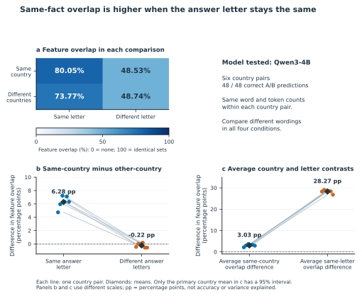
Figure 4. Same-fact overlap is higher when the answer letter stays the same. Qwen3-4B: six country pairs, 48 correct next-token A/B predictions, and identical word/token inventories within pairs. Rules were fixed before collection in this outcome-informed follow-up. A, Mean feature overlap in the four cross-wording comparisons: 0.8005, 0.4853, 0.7377, and 0.4874, read row by row. The scale runs from no shared features (0) to identical sets (1). B, Same-country minus different-country overlap is 0.0628 with the same letter and -0.0022 with a changed letter. Their paired difference is 0.0650 (exploratory Student-t 95% interval 0.0553–0.0746; two-sided sign-flip p=0.03125). C, The average same-country overlap difference is the mean of the two contrasts in B and is the prespecified primary outcome: 0.0303 (95% block-bootstrap interval 0.0265–0.0338). The descriptive same-letter minus different-letter difference, averaged across country relationships, is 0.2827. Lines represent country pairs; diamonds show means. Only the primary mean in C has an interval drawn. Colors identify labeled categories; B and C use different vertical scales. Tests assume six independent country-pair blocks; the sign-flip test additionally assumes symmetric null differences. The 48 graphs and 4,096 conditional-null reassignments are not independent replicates. Near zero is not equivalence. Overlap differences are neither accuracy nor variance explained; query order, country roles, and output-conditioned graphs remain alternatives to a causal interpretation. Supplement S6 reports graph-location checks.
The matched-choice study used correct predictions. We next asked whether graph similarity also followed the predicted answer when that answer was wrong. With options “A: Berlin. B: Paris” and countries listed as “France, Germany,” the model incorrectly answered A when asked for the first country’s capital, or Berlin when asked to give the capital name. Naming France directly produced the correct B or Paris response; naming Germany produced the correct A or Berlin response. The error graph shared more features with the correct Germany prediction giving the same answer than with the correct France prediction for the intended country (Figure 5b,c).
These errors arose in a list-position task that produced 8/16 correct A/B predictions and stopped at its fixed accuracy requirement. Checks found no mismatch in the expected answers, submitted prompts, token sequences, or decoding of predicted tokens. A subsequent 20-question diagnostic passed all four checks using direct instructions or previously successful questions. All eight questions naming the country directly produced the intended next token, while all eight selected questions identifying the country by its list position reproduced errors across the letter and capital-name response formats (Figure 5a). The planned evaluation following the failed preliminary check was not conducted.
All 16 diagnostic graphs passed integrity checks and reproduced their archived preview answers. We compared each error graph with two correct-answer graphs: one for the intended country and one producing the same answer as the error. Every comparison favored the graph sharing the error’s answer (Figure 5b,c). The mean same-output minus same-country Jaccard difference was 0.1983 for A/B responses and 0.2649 for capital-name responses. Equalizing feature counts retained differences of 0.1851 and 0.2361, respectively, and influence-weighted cosine similarity preserved the direction in all eight comparisons. These comparisons shared control graphs and concerned only France and Germany, so they describe the selected cases rather than eight independent replications.
The greater overlap with the same-answer control remained in all eight selected comparisons after removing feature nodes at the final input-token position, in the last quarter of observed feature layers, or both. Removing both groups gave mean differences of 0.2053 for labels and 0.2608 for capital names (Supplementary Figure S6b). The pattern therefore extended beyond those positions and layers. These checks changed the graphs used for comparison, not the model itself; the retained graphs were still constructed to explain the predicted answer.
Across these selected cases, sharing the predicted answer corresponded to greater feature overlap than sharing the intended country. Because the errors were selected for inspection, these comparisons do not estimate how frequently the model makes this mistake. The layouts also leave two explanations unresolved: selecting answer options by position and misinterpreting phrases such as “first country, not the second.” Both explanations predict the same errors in these cases. Supporting analysis A3 provides the input-position and reconstruction-error analyses and documents the missing output nodes for the intended correct answers.
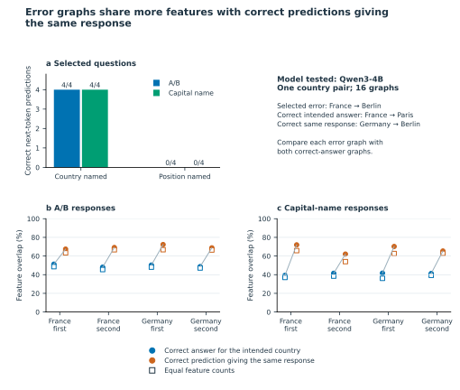
Figure 5. Error graphs share more features with correct predictions giving the same response. Qwen3-4B, one country pair and two response formats. A, All eight named-country prompts predict the correct first token; all eight selected position-based prompts reproduce the error (four of each per format). B–C, Compare error graphs with correct predictions for the intended country (blue) or giving the same answer (orange), holding list order and A/B mapping fixed. With France first and A: Berlin, B: Paris, the indirect France question predicts Berlin; naming France predicts Paris and naming Germany predicts Berlin. The error graph shares more features with Germany/Berlin. Circles use all retained features; open squares average 200 equal-feature-count samples. Lines connect comparisons for the same error. Same-answer minus intended-country overlap averages 0.1983 for letters and 0.2649 for capital names (0.1851 and 0.2361 with equal counts). All 16 exports and eight comparison triples pass integrity and output checks. The selected cases share controls, so they support descriptive comparisons, not error-frequency estimates or population tests. Words differ between prompt types; position matching, negation errors, and output-conditioned graph structure remain unresolved explanations. The intended correct-answer node is absent from each error graph, leaving its contribution unknown.
We next asked whether the original three-model pattern could be explained by differences in graph size. Did same-fact questions share more features simply because their graphs contained more features? Within each model and subject area, we repeated the comparison after sampling equal numbers of features from the starting and reworded factual graphs, then repeated it with half as many. Mean same-fact-minus-other-fact overlap remained positive for all three models at both sample sizes (Supplementary Figure S3).
K is the smallest number of distinct features among the included starting and reworded factual graphs within each model and subject area. K/2 is half that number, rounded down. Table entries are mean same-fact-minus-other-fact Jaccard differences, not raw overlap scores.
| Model | All features | Equal counts, K (descriptive 95% interval) | Half counts, K/2 | Questions with positive averages at K |
|---|---|---|---|---|
| Gemma-2-2B | 0.170 | 0.149 [0.066, 0.257] | 0.058 | 7/8 |
| Qwen3-1.7B | 0.089 | 0.084 [0.076, 0.092] | 0.033 | 10/10 |
| Qwen3-4B | 0.218 | 0.181 [0.110, 0.267] | 0.072 | 12/12 |
The mean within each model remained positive in every one of the 200 sampling repetitions at both feature counts. After averaging across repetitions, seven of eight Gemma questions, all ten Qwen3-1.7B questions, and all twelve Qwen3-4B questions had positive differences at K. Gemma’s tungsten question reversed direction, with average differences of −0.0187 at K and −0.0080 at K/2. Thus, the positive model averages persisted after matching feature counts, although not every individual question retained a positive difference (Supplementary Figure S3). The intervals summarize uncertainty across questions; the 200 repetitions are not additional independent observations.
The two Qwen3-4B history facts also retained positive differences at both feature counts. Their averages were 0.543 and 0.370 at K, and 0.210 and 0.151 at K/2 (Supplementary Figure S9b).
Subsampling can retain a shared feature in one graph while removing it from another. Consequently, the reduction in Jaccard overlap cannot be interpreted as the percentage of the original association explained by graph size. Supporting analyses A1–A2 report the output and export-integrity checks (Supplementary Figures S5 and S1–S2). Supporting analysis A4 provides the feature-count analysis and explains why the earlier size-regression calculation was not an independent robustness check.
Historical-date graphs could remain highly similar even when the model selected a different year. We analyzed all 16 Qwen3-4B graphs from two event pairs, including 11 correct and five incorrect predictions. In the Declaration of Independence example, swapping the dates assigned to A and B left the predicted letter unchanged at A but changed the selected year from 1776 to 1783. Jaccard overlap was 0.795. With the context placed before the question, the model instead changed from A to B and retained the correct year, 1776; overlap was 0.512 (Figure 6a).
Across all eight comparisons that swapped the A/B date assignments, the five pairs retaining the same predicted letter had Jaccard overlaps of 0.795–0.911. Each pair contained predictions for different years: one correct and one incorrect. In contrast, the three pairs that changed the predicted letter retained the same correct year and had overlaps of 0.512–0.532 (Figure 6b). Preserving the selected year therefore did not guarantee greater feature sharing than changing it.
Changing question/context order showed the same association with the predicted letter. With the event and A/B date assignments held fixed, the five comparisons retaining the same letter had overlaps of 0.766–0.808, whereas the three comparisons changing the letter had overlaps of 0.527–0.602 (Figure 6c). Feature overlap thus tracked the predicted letter without guaranteeing that the same year was selected or that the answer was correct. Supporting analysis A7 reports the event-pair summaries and required-letter contrasts.
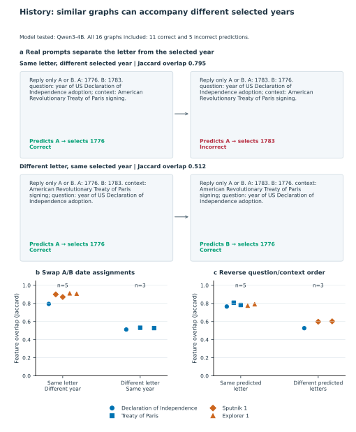
Figure 6. History: similar graphs can accompany different selected years. Qwen3-4B attribution graphs for 16 historical-date prompts, including 11 correct and five incorrect predictions. a, Two real pairs asking for the year of adoption of the US Declaration of Independence. Within each row, the dates assigned to A and B are swapped while the question and context remain unchanged. When the question comes first, the model predicts A in both prompts, selecting 1776 in one and 1783 in the other; feature overlap is 0.795. When context comes first, the model changes from A to B to retain the correct year, 1776; overlap is 0.512. The exact user-prompt text is shown with added line breaks; the model chat wrapper is not shown. b, All eight comparisons that swap the A/B date assignments while holding the queried event and question/context order fixed. The five same-letter comparisons select different years, with one correct and one incorrect prediction per pair (Jaccard 0.795–0.911). The three different-letter comparisons retain the same correct year (0.512–0.532). c, All eight comparisons that reverse question/context order while holding the event and A/B date assignments fixed. Overlap is 0.766–0.808 when predictions retain the same letter and 0.527–0.602 when the letter changes. Each point represents a pair of graphs; marker shapes and colors identify the queried event. Panels b and c reuse the same 16 graphs from two event pairs. Jaccard overlap is the number of shared feature identities divided by the number present in either graph; 0 means none are shared and 1 means the feature sets are identical. Feature identities exclude embeddings, output nodes, and reconstruction-error nodes. The panels report descriptive comparisons without treating graph pairs as independent replications.
Rewordings of the same fact shared more attribution-graph features in all three analyzed model samples (Figure 2). The positive model averages persisted after equalizing feature counts, so differences in the number of retained features alone did not account for the observation (Supplementary Figure S3). Shared words and expected answers remained coupled to factual identity, however. The original comparison therefore establishes a combined association, rather than a measure specific to the requested fact.
The Qwen3-4B comparisons sharpen this interpretation. The same-country overlap advantage was concentrated in comparisons sharing an answer letter, and selected error graphs favored correct predictions giving the same response (Figures 4 and 5). Historical-date comparisons further separated agreement on the response letter from agreement on the selected year (Figure 6). Together, these comparisons show why the predicted response must be considered when interpreting feature overlap.
In Qwen3-4B, changing which letter represented the correct capital was accompanied by lower graph overlap, even though every answer remained correct (Figure 4). Graph similarity therefore changed without a loss of factual accuracy. Conversely, selected incorrect answers shared more features with correct answers producing the same response than with correct answers for the intended country (Figure 5). The history comparisons reinforced this distinction: similar graphs could accompany an unchanged response letter selecting different years (Figure 6). Together, these findings show that feature overlap cannot be interpreted simply as a measure of correct factual processing.
This distinction matters when using attribution graphs to investigate how models answer factual questions. Jaccard overlap quantifies feature sharing, but does not establish whether those shared features contribute to retrieving a fact, producing a response, or both. Questions about the same fact often preserve the expected answer, making these interpretations difficult to separate. Comparing the same fact under different answer labels, and different facts under the same label, helps reveal which relationship the overlap follows. Our results therefore support evaluating the requested fact, predicted response, and answer correctness together when interpreting graph similarity.
The evidence has different breadth for these two conclusions. Greater feature sharing between same-fact questions appeared in all three analyzed model samples. The experiments separating fact identity from the answer letter were conducted in Qwen3-4B, so whether that answer-associated pattern extends to the other models remains an open question. The selected error and history comparisons show concrete ways that graph similarity and factual correctness can diverge. Their small samples and shared comparison graphs do not establish how frequently those patterns occur across questions.
The remaining question is why graph similarity tracks the predicted response. Producing the same response may involve shared model activity, while constructing graphs to explain that response may also favor the retention of similar features. Both could contribute. Distinguishing these explanations would clarify whether the observed pattern primarily reflects the model’s computation, the way that computation is measured, or their interaction.
To test how graph construction affects feature sharing, the model’s activity could be held fixed while changing only the output being explained. From one recorded model run, one graph could explain the A token and another the B token, with the prompt, model activity, and graph settings unchanged. Differences between their retained features would reveal sensitivity to the choice of output being analyzed. This would test whether changing the explained token changes the graph, although it would not by itself establish how much of the similarity across questions comes from that choice.
A complementary test would ask whether questions producing the same answer already have similar feature activity before graph construction. Our same-fact and same-answer comparisons could be repeated using activity recorded before features are selected for a particular output, keeping feature definitions fixed and checking sensitivity to feature counts. Similarity present before this selection would support a contribution from shared model activity. A pattern that appears or becomes stronger after selection would indicate that graph construction also shapes the measured relationship.
Interventions would then test what the shared features contribute to the answer. Changing the activity of candidate features could reveal whether they influence a particular response token across different facts, or responses about a particular fact when its answer letter changes. These tests should use facts and wordings not used to select the features, an unchanged-model baseline, and randomly selected features matched in number, layer, and activation. Testing several intervention strengths would help distinguish selective effects from general disruption. A selective change in the predicted response would provide stronger evidence about feature function than an overall decline in accuracy.
These comparisons require access to feature activity before output-dependent selection and to alternative outputs being explained. Our saved exports contain only retained features and do not consistently include those alternative outputs, so they cannot provide the complete comparison on their own. Together, the proposed tests would move the investigation from observing feature sharing to identifying where it arises and what the shared features contribute to model behavior.
Reworded questions about the same fact shared more attribution-graph features across the three analyzed model samples. In Qwen3-4B, that advantage was concentrated in comparisons sharing the answer letter, while selected errors and historical-date comparisons showed that feature sharing could follow the response without agreement on the correct factual answer. Attribution-graph comparisons should therefore distinguish the fact being queried, the response produced, and whether that response is correct. This distinction is necessary for interpreting feature overlap as evidence about factual processing.
Among 50 available Qwen3-1.7B factual prompt graphs, 42 predict a complete accepted answer in the next token, four predict a compatible beginning, and four predict a different next token. Among 60 Qwen3-4B factual graphs, the corresponding counts are 50, five, and five (Supplementary Figure S5). These counts include development and evaluation questions and incomplete Qwen3-1.7B history sets; they are not the numbers of included evaluation facts. No subsequent-token generation is archived to verify completed answers.
The Qwen3-4B complete answers include María for the
Columbus rewording. Both Maria and María refer
to the same flagship [8,9]. The final analysis includes this question
and the Franz Ferdinand question under the complete-set and
accepted-answer rules described in Section 2.2.
For Columbus, overlap with the factual rewording was 0.624, compared
with 0.023 for the Franz Ferdinand rewording. For Franz Ferdinand, the
corresponding overlaps were 0.427 and 0.032 (Supplementary Figure S9a).
The Columbus pair predicts Maria and María, so
high overlap in this example does not require identical output-token
text. Equalizing feature counts retained positive differences for both
facts: 0.543 and 0.370 at K, and 0.210 and 0.151 at K/2 (Figure S9b).
These points average 200 subsamples and are not additional
observations.
Both history facts also had greater overlap with their factual rewording than with either invented name control: differences were 0.537 and 0.556 for Columbus, and 0.384 and 0.385 for Franz Ferdinand, for the starting-pattern and reworded controls, respectively. All four controls predicted a comma, whereas the factual prompts predicted names. Neither fact therefore entered the output-type-matched control comparison in Figure 3, which uses ten Qwen3-4B facts. The history pair supports a descriptive same-fact association, but does not separate shared wording and answers from factual content.
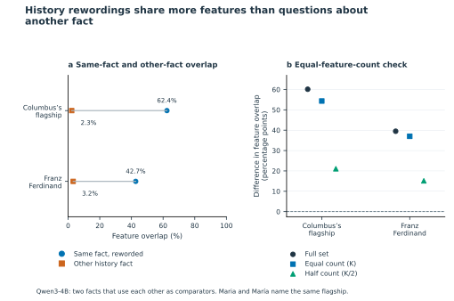
Figure S9. History rewordings share more features than questions about another fact. Qwen3-4B history facts included in the main comparison in Figure 2. Both factual versions and both invented name controls are available for each fact. A, Starting-question overlap with its own rewording (blue circles) versus the other history fact’s rewording (orange squares). Columbus: 0.624 versus 0.023; Archduke Franz Ferdinand: 0.427 versus 0.032. These give differences of 0.601 and 0.395, averaging 0.498. The Columbus predictions differ in spelling, Maria versus María; the Franz predictions both give Ferdinand. B, History differences with full feature sets, equal counts K, and half counts K/2. Subsampled points average 200 repetitions, not independent observations. Differences remain positive: 0.543/0.370 at K and 0.210/0.151 at K/2. The two history facts use each other as comparators, so their mean describes these questions rather than an independently replicated history effect. Both invented name controls predict punctuation for both facts, excluding these controls from the output-type-matched comparison in Figure 3. Figure 6 concerns historical dates in a different A/B question design.
All 50 Qwen3-1.7B prompt-token and logit-decoding checks agree with
the archived tokenizer. Its compatible beginnings are the two mercury
outputs (H for Hg), the Berlin Wall rewording
(G for Gorbachev), and the French Revolution
rewording (Bast for Bastille). History
contributes ten available factual graphs: four whole expected tokens,
two compatible beginnings, and four different next tokens. The latter
include African where the expected string is
ANC, as well as one, the, and
first. Qwen3-4B’s five compatible beginnings are mercury
target/rewording, Berlin Wall target/rewording, and the French
Revolution rewording. These partial tokens remain excluded from the
factual-completion comparison.
These classifications do not establish semantic error for every
different token: for example, a continuation beginning
African could require full-answer adjudication against an
expected acronym. A compatible beginning does not satisfy the complete
accepted-answer rule.
Strict crossed expected-token agreement was 7/9, 4/9, and 0/9 for Gemma chemistry, geography, and history; corresponding Qwen3-4B counts were 8/9, 9/9, and 0/9. Eight Qwen3-4B crossed outputs were whitespace-only compatible continuations, not substantive answer retrieval. Only Qwen3-4B geography qualified as a fully balanced strict-output subset. There, binary fact and wording effects were 0.1014 and 0.1063: close point estimates from one small domain, without a formal dominance test.
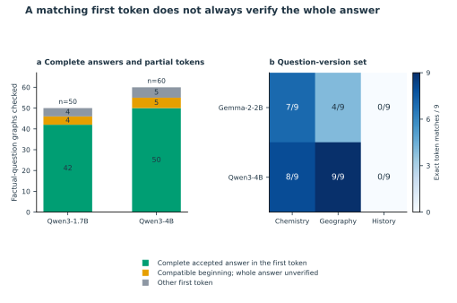
Figure S5. A matching first token does not always verify the whole answer. A, Audit the first predicted text unit, or token, using the Qwen tokenizers. Green means the token gives the complete accepted answer, including registered spelling variants; yellow means only a compatible beginning, leaving the completed answer unverified; gray means another first token. Qwen3-1.7B has 42 complete accepted answers, four compatible beginnings, and four other tokens among 50 available factual-question graphs. Qwen3-4B has 50, five, and five, respectively, among 60 available factual graphs. Maria and María are accepted as the same ship name. Counts include development and test questions and partial Qwen3-1.7B history sets; they are not the included evaluation counts in Figure 2. Official Qwen tokenizer versions agree with all saved prompt pieces and decoded top tokens, but the exact versions used at the time of graph collection cannot be fully recovered. Gemma tokenizer access was denied, leaving that audit unresolved. B, In the fact/wording experiment, counts use the exact first-token matching rule after trimming whitespace; that rule is unchanged. Only Qwen3-4B geography matches in all nine questions. Its fact/wording differences are 0.101/0.106, which do not establish that either factor dominates. A zero in history means zero matches under this rule, not zero history knowledge.
Ambiguous IDs occurred in 84/120 Gemma question/control exports and 13/27 Gemma fact/wording exports; none were detected in 91 Qwen3-1.7B or 147 Qwen3-4B exports. Reconstruction-error node influence remains nonzero: median fractions were approximately 7.15%, 6.06%, and 14.57% in the respective question/control datasets. These are audit-defined fractions of absolute nonterminal influence, not causal percentages of an answer explained. The clean-export Gemma evaluation sensitivity has only two facts. Differences across pipelines combine prompt coverage, model, exporter, and approximation choices, rather than isolating architecture or answer accuracy.
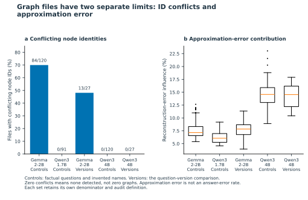
Figure S1. Graph files have two separate limits: ID conflicts and approximation error. A, The percentage of saved raw graph files in which the same node ID refers to conflicting node identities. Labels show affected files over files checked. Qwen3-1.7B has 0/91 detected conflicts. Zero means no conflict was detected, not no graphs or no model errors. Question/control sets include factual questions and controls; the fact/wording sets vary both factors. B, Reconstruction-error nodes record part of the model computation not captured by the feature approximation. The axis gives their share of absolute nonterminal-node influence, using the saved audit definitions. This is not the percentage of wrong answers or of reasoning explained. Box centers mark medians; boxes span the middle 50%, whiskers extend to values within 1.5 box lengths, and dots show values beyond the whiskers. Qwen3-1.7B has median reconstruction-error influence 6.06%. Counts include all available graphs, including controls and partial sets, not only included evaluation questions. Gemma and Qwen3-1.7B distributions use raw-file audits; Qwen3-4B uses converted graphs with no ambiguous IDs removed. Differences combine model, exporter, and approximation choices; they do not isolate model size or architecture.
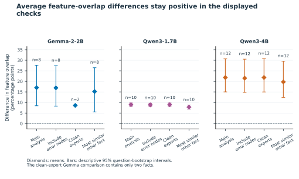
Figure S2. Average feature-overlap differences stay positive in the displayed checks. The difference in feature overlap is same-fact overlap minus other-fact overlap, using the comparison specified for each check. Compare the main analysis with three alternatives: include reconstruction-error nodes; use only files without detected node-ID conflicts; or compare with the most similar other-fact question rather than the average other-fact question. Reconstruction-error nodes represent approximation error, not wrong model answers. Points are saved averages; bars are 95% bootstrap intervals from resampling test questions. n counts questions. Qwen3-1.7B means are 0.089, 0.089, 0.089, and 0.078, respectively (n=10 each). Restricting files requires rebuilding the comparison groups and leaves only two Gemma questions, so that positive result is weak evidence on its own. The size-regression intercept is not plotted: with centered predictors it equals the unadjusted mean and is not an independent check. This figure concerns feature-set overlap, not every graph metric; the Qwen3-1.7B edge-flow cosine result is inconclusive.
An additional inspection of token-location summaries provided a narrower clue. In all four capital-name failures, feature sources at the wrong country’s name in the list had 4.9–14.6 times the absolute direct incoming weight of sources at the intended country’s name. In all four named-country capital controls, the intended country’s name had greater weight. The corresponding A/B summaries did not exhibit a consistent wrong-country dominance. This format-dependent observation is compatible with incorrect reference selection, but token location does not establish feature semantics or causal necessity.
The graphs also leave substantial uncertainty. Reconstruction-error sources accounted for a median 23.1% of absolute direct incoming weight to the observed logit across the 16 graphs (range 17.2–31.4%). The intended correct logit was absent from all eight failure exports, so its attribution is unavailable rather than zero. Most displayed nodes occur at late layers near the answer-generation position; a “chat frame” location label does not imply a formatting mechanism. Crucially, these selected layouts confound choosing the answer option at the requested position with choosing the country named by the excluded ordinal in phrases such as “first country, not the second.” Position matching and mishandled negation therefore remain observationally indistinguishable in this batch.
The fact-by-wording experiment compared question pairs sharing a fact or a labeled version. Both comparisons had positive average overlap differences relative to pairs differing in both fact and version: 0.074/0.118 in Gemma and 0.101/0.064 in Qwen3-4B (Figure S10). Shared version labels did not consistently indicate identical sentence patterns across facts. Influence-weighted similarity had the same ordering within each pipeline (0.090/0.114 and 0.105/0.075). This ordering is descriptive because output quality and subject coverage vary: only Qwen3-4B geography passed the strict expected-token rule in all nine questions (Supporting analysis A1).
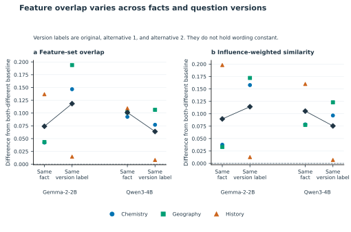
Figure S10. Feature overlap varies across facts and question versions. A, Feature-set overlap differences. B, Saved-influence-weighted cosine differences, comparing the direction of weighted feature vectors. Question versions were labeled original, alternative 1, or alternative 2. The baseline differs in both fact and version label. Each value is similarity in the labeled comparison minus similarity in that baseline, calculated within subject area. Shared version labels did not imply identical sentence patterns across facts; this is not an exact-wording control. Each tested model has 27 graphs: three facts × three versions × three subject areas. Colored points are subject averages; black diamonds average subjects equally. Lines connect descriptive estimates, not intervals. Mean same-fact/same-version-label differences in A are 0.074/0.118 for Gemma-2-2B and 0.101/0.064 for Qwen3-4B. Some predicted first tokens are incomplete answers or non-answers. Only Qwen3-4B geography passes all nine expected-token checks; its differences are 0.101/0.106. These similarity measures do not measure correctness or establish factor dominance or model superiority. Qwen3-1.7B was not tested here.
The word-matching audit, equal-feature-count sampling, and graph-location filters support the comparisons in Results §§3.2–3.5. They test different aspects of the measurement: available comparison support, representation size, and retained node locations.
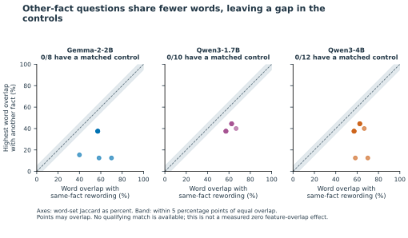
Figure S4. Other-fact questions share fewer words, leaving a gap in the controls. For each test question, compare word overlap with its same-fact rewording (horizontal axis) against the highest word overlap with any other-fact rewording (vertical axis). Word overlap uses unique letter/number words, ignores letter case, and keeps common words. Both axes use Jaccard overlap: shared words divided by all distinct words across the pair. The dashed line means equal overlap; the shaded band allows a difference of 0.05 in either direction. Every other-fact comparison lies more than 0.05 below its same-fact comparison. No test question has a matched control under any of the three saved word/size matching rules: 0/8 for Gemma-2-2B, 0/10 for Qwen3-1.7B, and 0/12 for Qwen3-4B. This is a missing comparison, not a measured zero effect or proof that words explain all feature overlap. Same-fact questions also share their expected answer, so the data do not isolate meaning from words or answers.
An earlier regression check does not supply independent evidence against graph-size confounding: the ordinary least-squares intercept with centered predictors equals the original sample mean by construction. Sampling equal numbers of features provides a more direct but still limited check.
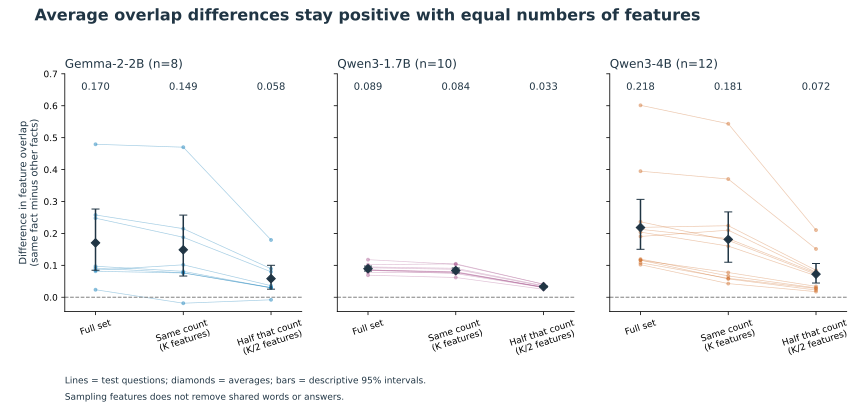
Figure S3. Average overlap differences stay positive with equal numbers of features. The difference in feature overlap is same-fact overlap minus average other-fact overlap within the same subject and test set. Within each model, subject, and test set, randomly sample the same number of features from every graph. K is the number of features in the smallest graph in that group; the second check uses half that number, rounded down. Repeat 200 times, reusing each sampled graph across comparisons within a repetition. Lines show individual test questions; diamonds show averages. Bars are descriptive 95% bootstrap intervals from resampling questions, not from the 200 feature samples. Seven of eight Gemma questions, all ten Qwen3-1.7B questions, and all twelve Qwen3-4B questions retain positive average differences. Qwen3-1.7B means are 0.089 for the full feature sets, 0.084 at K, and 0.033 at K/2. Qwen3-4B means are 0.218 for full sets, 0.181 at K, and 0.072 at K/2. Equalizing counts does not remove differences in shared words, answers, or which features the exporter retains. A smaller overlap score after sampling is not a percentage of signal explained.
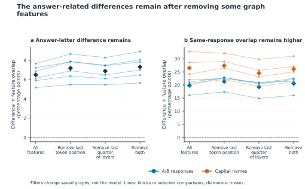
Figure S6. The answer-related differences remain after removing some graph features. Qwen3-4B only. Repeat the saved comparisons after removing features at the last token position, in the last quarter of observed feature layers, or both. Removal happens before combining feature identities across positions. A, Plot the difference between the same-letter and changed-letter fact comparisons in Figure 4B. Each line represents one of six country pairs; black diamonds show averages. B, Plot overlap with the correct same-answer response minus overlap with the correct intended-country response in the selected errors from Figure 5. Lines show the individual comparisons; colored diamonds show format averages. All filtered feature sets are nonempty. Zero means equal overlap, not missing data. These checks were chosen after seeing earlier results. No confidence intervals or new population tests are attached. Removing features from saved graphs is not an intervention on the model and does not establish a cause. The remaining graphs are still constructed around the answer being produced.
The 91-graph Qwen3-1.7B dataset was analyzed using the four-version,
expected-next-token, and comparison rules within the same subject area
in Sections 2.1–2.2. It includes 19 qualifying facts across development
and evaluation: nine chemistry and ten geography. The mercury
development fact remains excluded because both factual prompts predict
H, a compatible beginning of the expected Hg,
rather than the whole expected string. All ten history facts are
excluded for incomplete prompt/control sets, including four with no
returned graphs. The primary evaluation contains five chemistry and five
geography facts, with subject means of 0.0854 and 0.0935 and all ten
differences positive. Development means, reported separately, are 0.0723
for chemistry (n=4) and 0.0771 for geography (n=5).
For the ten evaluation facts, the mean difference is 0.0894, with a descriptive 10,000-resample fact-level bootstrap interval of [0.0820, 0.0976]. The nominal one-sided sign-flip p-value is 0.0009766. The exact fact-label permutation within each subject area gives p=0.0000694 across 14,400 assignments. Holm correction covers the 15 secondary metric/contrast tests detailed in Supporting methods A5.1, excluding the primary comparison. These are exploratory summaries. Facts share comparison questions, so the bootstrap and sign-flip calculations do not remove dependence; the conditional permutation assumes exchangeable factual pairings and does not control shared words or expected answers. The three-subject requirement remains unmet.
| Comparison or check in the evaluation sample | Mean difference | Descriptive 95% interval | Positive facts / included facts |
|---|---|---|---|
| Same-fact minus average other-fact overlap | 0.0894 | [0.0820, 0.0976] | 10/10 |
| Same-fact minus most similar other-fact overlap | 0.0780 | [0.0686, 0.0879] | 10/10 |
| Same-fact minus average other-fact overlap, including reconstruction errors | 0.0887 | [0.0814, 0.0968] | 10/10 |
| Same-fact minus same-pattern invented name overlap | -0.0114 | [-0.0203, -0.0011] | 2/10 |
| Same-fact minus reworded invented name overlap | 0.1059 | [0.0917, 0.1200] | 10/10 |
| Same-pattern control, matched by broad output type | -0.0109 | [-0.0208, 0.0005] | 2/9 |
| Reworded control, matched by broad output type | 0.1059 | [0.0918, 0.1194] | 10/10 |
| Equal feature counts, at the subject minimum K | 0.0835 | [0.0759, 0.0916] | 10/10 |
| Equal feature counts, at half K | 0.0331 | [0.0303, 0.0361] | 10/10 |
All table entries are differences in Jaccard overlap. The equal-count rows summarize each fact over 200 feature samples, using K=1,768 for chemistry and K=1,682 for geography. Every repetition’s overall mean and every fact’s average difference were positive at both sampling sizes; the 200 repetitions are not additional independent facts. Deleting one already-computed fact difference at a time leaves means of 0.0863–0.0917, with the original comparison pools held fixed.
Using exported influence to weight features gives a positive same-fact minus other-fact cosine difference of 0.0741 ([0.0641, 0.0854], 10/10 positive). Weighted comparisons favor the same-pattern invented name control in all ten cases (mean difference -0.0777), but favor the factual rewording over the reworded control in all ten (0.0960). However, the coarser layer-to-layer edge-flow comparison is not consistently positive: its mean difference is 0.00016 ([-0.00106, 0.00119], 5/10 positive). The layer-profile comparison also does not pass its Holm-adjusted secondary test (p=0.1934). These results extend the feature-sharing observation, not a claim that all aspects of graph structure distinguish same-fact questions.
None of the ten evaluation facts had a qualifying other-fact match under any of the three word-matching rules. Word overlap with the same-fact rewording exceeded the best other-fact overlap by 0.1806–0.2667. All ten same-fact pairs shared the expected answer; none of the 40 directed other-fact pairs did. The chemistry and geography observations therefore leave a gap in word- and answer-matched controls. These audits do not alter the inclusion rules or primary estimates.
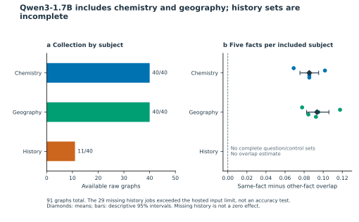
Figure S7. Qwen3-1.7B includes chemistry and geography; history sets are incomplete. Qwen3-1.7B collection and subject coverage. A, Available raw graphs, including development and evaluation prompts: 40/40 chemistry, 40/40 geography, and 11/40 history graphs, for 91 graphs total. Bar colors identify subjects. The 29 unavailable history jobs were rejected for exceeding the hosted token limit, not counted as wrong model answers. No history fact has all four required prompt roles. B, Included test questions: five chemistry and five geography questions. Each point is same-fact rewording overlap minus average other-fact rewording overlap within the same subject and evaluation set. Diamonds show means and bars show descriptive 95% question-bootstrap intervals: chemistry 0.085 (0.076–0.095) and geography 0.093 (0.083–0.106). All ten differences are positive. History has no plotted estimate, not a zero effect. Inclusion retains the complete four-role and expected-next-token rules. Shared words and expected answers remain coupled to fact identity.
Graph settings and export checks. Graphs used the
recorded llamascope-2-transcoder-16k-k64 source and LoRSA
feature family, with at most ten candidate next tokens (maxNLogits=10),
node and edge thresholds of 0.8 and 0.85, and a 5,000-feature-node cap.
LoRSA tracing settings were qkTopFraction=0.5 and qkTopk=5. Desired
cumulative output probability was 0.99 for the completion requests; some
archived files used 0.95 output coverage. Files and their source and
exporter metadata were preserved rather than treated as products of
identical hosted versions. Raw-file audits checked identifiers, edge
endpoints, duplicate edges, and finite numerical values. No shorter
prompts or replacement questions were introduced.
The recorded source families were consistent across the Qwen3-1.7B collection. The 41 completion exports identify version 2.0.0b34 and passed identifier, endpoint, duplicate-edge, and finite-value checks. Output-coverage settings differ across some files, as documented in Section 2.8; unchanged hosted weights cannot be independently verified. Shorter history prompts were not generated or substituted; the feasibility proposal is deferred from this paper.
Statistical implementation and correction family. The primary contrast was same-fact minus average other-fact Jaccard overlap. We used 10,000 fact-level bootstrap resamples, exact one-sided sign-flip tests, and exact fact-label permutations within each subject area, with main seed 20260714. The evaluation permutation enumerated 5! × 5! = 14,400 assignments. Bootstrap intervals and sign-flip tests describe fact-level differences that share comparison questions; the permutation assumes exchangeable factual pairings within each subject area.
Holm correction was applied to the 15 secondary evaluation-sample sign-flip p-values, excluding the primary comparison. This family crossed four metrics (feature Jaccard and cosine similarities of influence-weighted features, layer profiles, and layer-to-layer edge flow) with four comparators (average other fact, most similar other fact, same-pattern invented name, and reworded invented name), minus the primary Jaccard/average-other-fact test. The invented name comparisons in this family used the full eligible sample, not the subsets matched by output type. Output-type-matched subsets, error-inclusive and equal-count checks, and subject-specific summaries were outside this correction family. These exploratory summaries do not remove shared-word or expected-answer differences.
Sensitivity calculations. Sensitivity analyses retained both invented name controls, comparisons matched by broad next-token category, the most similar other-fact comparator, exported-influence-weighted cosine, reconstruction-error-inclusive representations, layer profiles, and layer-to-layer edge-flow summaries. Feature weights summed absolute exported influence across occurrences; layer profiles aggregated that influence by layer, and edge-flow profiles aggregated absolute edge weights between eligible feature nodes by source and target layer. Output-type matching required the control and starting question to have the same broad next-token category; the resulting sample sizes are reported in the A5 results table. Equal-feature-count checks reused Section 2.4’s 200 subsamples at K and floor(K/2), with seed 20260905 and K defined separately within each subject’s evaluation set. The subsamples were not treated as additional facts. Leave-one-fact-out summaries removed one already-calculated difference at a time without rebuilding its comparison pool.
Audit scope and chronology. Verification included raw-file hashes, agreement with archived feature representations, and reconstruction of previously calculated per-fact Jaccard and influence-weighted contrasts to absolute tolerance 1e-12. Earlier subset estimates remain in the archive and are not counted as additional evidence. The combined 91-graph dataset supplies ten evaluation facts; these are different units from the graph-file and token-audit denominators below.
Retrospective saved-data audits used the export, word-matching, and tokenizer procedures in Section 2.4. Export checks covered all 91 graphs; word-matching checks covered the ten included evaluation facts; token checks covered all 50 available factual starting/reworded prompts, including development questions and partial history sets. Reconstruction-error influence was summarized as absolute error-node influence divided by absolute nonterminal-node influence, using nodes with valid identifiers; it is not an answer-error rate or a causal contribution estimate. The archived tokenizer and unchanged word-matching rules were reused. Compatible answer beginnings remained distinct from complete expected next-token answers, and these audits did not alter inclusion or primary estimates. Audit plans were recorded before the audit calculations but after earlier overlap findings were known; the plans and timing are retained in the provenance records. Other models and the separate fact-by-wording experiment retain their own analysis samples.
Figure S8 provides a visual reference for the primary question/control analysis in Section 2.2. Figure 1 describes the wider study design; the fact/wording, answer-letter, and selected-error experiments retain their own comparisons and inclusion rules.
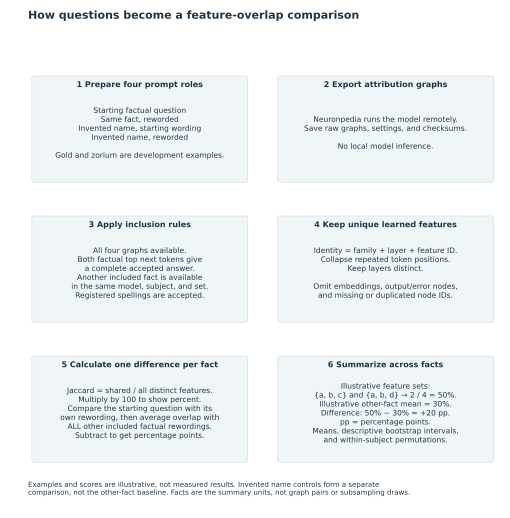
Figure S8. How questions become a feature-overlap comparison. Primary feature-overlap workflow for Gemma-2-2B, Qwen3-1.7B, and Qwen3-4B. The four prompt roles are starting factual, same fact reworded, invented name in the starting sentence pattern, and invented name reworded. Gold and invented name zorium refer to development examples from the manifest, not evaluation questions. Hosted Neuronpedia graph exports are analyzed locally without local model inference. Eligibility requires four available representations after export/integrity checks, both factual highest-probability next tokens matching a complete accepted answer after trimming whitespace, and another eligible fact in the same model, subject, and development/evaluation set. Accepted spellings include Maria and María for the flagship answer; partial answers do not qualify. Unique learned-feature identities are (family, layer, feature ID): positions collapse, but layers remain distinct. Embeddings, logits, reconstruction-error nodes, and nodes with missing or duplicated node IDs are omitted. Jaccard overlap J is shared unique features divided by distinct features in either set. Each starting set T_i is compared with its own rewording P_i and every other included factual rewording P_j in the same model/subject/set. The baseline is the mean of all those Jaccard overlaps, excluding i. Subtraction yields one difference per fact, M_i. Summaries, bootstrap intervals, and permutations within the same subject area concern facts, not graph pairs. Invented-name comparisons are separate controls, not the other-fact baseline; broad output-token-type matching is not the primary eligibility rule. Illustrative feature sets and scores, not measured results: {a,b,c} and {a,b,d} share a and b, while c and d are unshared, giving 2/4=0.50; an illustrative baseline of 0.30 gives +0.20. These values do not describe measured graphs. Letters denote identities, not concepts. The numbered steps describe the analysis, not causal pathways; overlap alone does not establish causal use or answer correctness.
All 16 historical-date exports passed the prompt, token-inventory,
identifier, edge-endpoint, duplicate-edge, finite-value, and conversion
checks. Their predictions reproduced all 16 saved previews: seven of
eight document-history answers and four of eight spaceflight answers
were correct. No graph was excluded for an incorrect prediction.
Collection used Qwen3-4B with transcoder-hp, node and edge
thresholds of 0.8 and 0.85, at most ten output logits, desired
cumulative output probability of 0.99, and a 5,000-feature-node cap. The
analysis retained the unchanged prompts and chat wrapper.
Across question/context orders, mean Jaccard overlap was 0.7396 for the same predicted letter versus 0.5075 for different letters in the document pair, and 0.7758 versus 0.5614 in the spaceflight pair. Each mean contains eight graph pairs, not eight independent facts. The four categories defined by the queried event and the required answer letter are reported below. Each cell averages four cross-order comparisons.
| Event pair | Same event, same required letter | Different event, same required letter | Same event, different required letter | Different event, different required letter |
|---|---|---|---|---|
| Declaration of Independence / Treaty of Paris | 0.7207 | 0.6533 | 0.5595 | 0.5608 |
| Sputnik 1 / Explorer 1 | 0.6915 | 0.6472 | 0.6795 | 0.6562 |
These required-letter contrasts do not uniformly reproduce the geography pattern. The average same-required-letter minus different-required-letter overlap was 0.1268 for the document pair but 0.0015 for the spaceflight pair. In contrast, the predicted-letter association appeared in both pairs. The same-event difference was larger with a shared required letter than with different required letters in both pairs: the differences between these two contrasts were 0.0686 and 0.0210. That direction remained positive for influence-weighted cosine, each graph-location filter, and the averages of 200 subsamples at K and half K. These checks concern the required-letter contrasts, not a separate filtered test of the predicted-letter grouping. The full 56-pair table, unsupported strata, and all sampling repetitions are retained with the source data.
The original historical-date protocol planned 20 evaluation event pairs and 160 graphs, conditional on all 20 preliminary predictions being correct. The preliminary checks returned 15/20 correct predictions, so no evaluation graphs were requested under that protocol. Its planned primary endpoint, the mean difference between same-letter and changed-letter fact contrasts in complete correct-answer blocks, was not measured; it required at least 16 supported blocks, including six per theme. The additional 16-graph analysis instead examines all historical prompts from the preliminary check, with correctness measured rather than required for inclusion. It neither completes the uncollected evaluation nor changes inclusion in the original three-model study.
| Original preliminary component | Correct top labels | Fixed requirement | Outcome |
|---|---|---|---|
| Literal A/B instructions | 4/4 | 4/4 | Passed |
| Declaration of Independence and Treaty of Paris | 7/8 | 8/8 | Failed |
| Sputnik 1 and Explorer 1 launch years | 4/8 | 8/8 | Failed |
| Entire preliminary check | 15/20 | 20/20 | No evaluation graphs requested |
The September plan is
EXPLORATORY_CONFOUND_CHECKS_20260905.md. The CPU-only
analysis and plotting scripts are
scripts/exploratory_confound_checks.py and
scripts/plot_exploratory_confound_checks.py. Their results,
input hashes, tokenizer revisions, per-graph/pair/fact tables,
subsampling repetitions, logs, and SVG/PNG figures are saved under
data/model_extension/exploratory_20260905. The original
primary files and earlier six-figure package are preserved. The new
analyses do not constitute a clean-room rerun of every original
estimator.
A curated working-paper review package is publicly available on the GitHub main branch. It contains the draft, figures, summary tables, protocols, and code snapshots; it is not a peer-reviewed publication or a complete raw-data release. The 11 November review edition incorporates the final available datasets, corrected answer scoring, and approved manuscript revisions. Raw Neuronpedia exports, tokenizer/model files, credentials, and downloaded reference PDFs are excluded. Their redistribution permissions remain unresolved, and a complete appropriately licensed deposit and independent reproduction remain outstanding. The October reproduction checks used saved data on the same machine, not an independent reviewer or a fresh hosted-model run. Human authors must review scientific claims and references. Codex assisted with code, audit, analysis, figures, and drafting; that assistance does not substitute for independent validation.
The October closeout audit is generated by
scripts/audit_paper_closeout.py under
data/model_extension/final_closeout_20261005; it
reconstructs the archived matched-choice and failure contrasts from
hash-verified saved graphs. The final history protocol is
HISTORY_CHOICE_FINAL_PROTOCOL.md, with fixed design,
runner, and analyzer in scripts/history_choice_closeout.py,
scripts/run_history_closeout.py, and
scripts/analyze_history_closeout.py. Its prompts, local
freeze, request records, checksums, and outcomes are maintained
separately under
data/model_extension/history_choice_final_v1.
requirements-closeout.txt specifies direct dependencies;
the resolved package versions, test logs, and
verification.json are saved under the closeout
reproduction directory by
scripts/reproduce_closeout.py. The isolated same-machine
reproduction reconstructed all 23 original primary margins from 342
checksum-verified available raw graphs, matched the closeout audit, and
passed 82 software tests. A separate terminal-pilot validator
reconstructed the 15/20 gate from archived responses, checked frozen
hashes and the shared request ledger, and confirmed that no evaluation
graphs were generated. These checks are not independent human review or
a fresh reproduction of hosted model outputs.
The matched-choice follow-up is documented in
MATCHED_CHOICE_CHAT_V2_PROTOCOL.md and
MATCHED_CHOICE_RESULTS_FOR_MANUSCRIPT.md; its archived
inputs, block-level results, and figures are under
data/model_extension/matched_choice_chat_v2. The failed
position pilot is documented in
MATCHED_CHOICE_POSITION_V3_PROTOCOL.md. Its diagnostic
audit remains under
data/model_extension/position_artifact_diagnostic_20261001.
The additional history graph analysis follows
HISTORY_PILOT_GRAPH_FOLLOWUP.md. All 16 raw and converted
graphs, unchanged prompts, preview records, checksums, audits, 56
pairwise comparisons, and sensitivity tables are maintained under
data/model_extension/history_pilot_graphs_20261110. The
collection, analysis, validation, and saved-data reproduction entry
points are scripts/run_history_pilot_graphs.py,
scripts/analyze_history_pilot_graphs.py,
scripts/validate_history_pilot_graphs.py, and
scripts/reproduce_history_pilot_graphs.py. Only the
collector requests hosted graphs.
scripts/build_history_multipanel.py generated the archived
history figure, its source table, and exact prompt examples from
validated saved results. The current Figure 6 reads those same saved
inputs through scripts/build_reviewed_paper_figures.py. The
local sharing package includes the derived results, source tables,
protocol, and code; it excludes raw exports and full feature caches. The
original stopped history archive is unchanged.
The Qwen3-1.7B completion follows
QWEN17_COMPLETION_ATTEMPT_20261106.md. Its unchanged raw
files, failed-request records, checksums, technical audit, frozen
analysis plan, representation caches, per-fact tables, and results are
retained under
data/model_extension/qwen17_completion_20261106. The entry
points are scripts/complete_qwen17_controls.py,
scripts/audit_qwen17_completion.py, and
scripts/analyze_qwen17_completion.py; only the collector
makes hosted requests. The combined sample, including the source tables
for Figure S7, was incorporated by
scripts/plot_updated_cohort_figures.py. The earlier
standalone completion plot remains reproducible with
scripts/plot_qwen17_completion.py. The sharing package
includes derived results, analysis-plan and execution records, and
source tables, but not raw graphs or full feature caches. This
completion does not overwrite any original cohort or frozen result.
The figure pipeline uses
scripts/audit_qwen17_completion_figures.py for the
retrospective word-overlap, expected-token, and export summaries stored
in the completion directory’s figure_audit folder.
scripts/plot_updated_cohort_figures.py supplies the
combined Qwen3-1.7B sample used in the final figure source tables,
without displaying its archived subset as another sample.
scripts/sync_manuscript_figure_captions.py --reviewed
synchronizes current titles and legends without rewriting body prose.
All current figures retain source tables and input hashes; earlier
analyses and figure packages remain archived. The 50-graph subset and
its five-fact estimates are preserved as provenance, not pooled with the
combined results or counted as independent evidence. Original protocols
were locally frozen, not publicly preregistered; outcome-informed
analyses retain their exploratory status.
The failure graph protocol is
FAILURE_CASE_GRAPH_ANALYSIS_PLAN.md. All 16 raw exports,
metadata, code snapshots, hashes, audits, converted node/edge tables,
role summaries, comparison values, and PNG/SVG figures are under
data/model_extension/failure_case_graphs_v1. The saved-data
analysis, figure, and validation entry points are
scripts/analyze_failure_case_graphs.py,
scripts/plot_failure_case_graphs.py, and
scripts/validate_failure_case_graphs.py. The descriptive
country-location ratio divides absolute_weight for feature
sources at the other country’s list occurrence by the corresponding
weight at the intended country’s occurrence in each capital-name graph’s
source_role_totals.csv. The four failure ratios are 4.919,
8.773, 13.567, and 14.630 approximately; the unrounded tables are
authoritative. This manuscript integration changes no frozen estimates
or analysis files.
The final scoring registry is
config/answer_spelling_aliases_20261111.json.
scripts/finalize_corrected_scoring.py assembles the
corrected results and dependent checks, and
scripts/build_final_corrected_figures.py generates the
archived final-scoring figure edition.
scripts/build_reviewed_paper_figures.py rebuilds the
current six main figures and ten supplements from those saved tables and
the existing diagnostic results, without re-estimating statistics. The
final results, inclusion decisions, lexical comparisons, equal-count
summaries, and verification records are retained under
data/model_extension/final_corrected_scoring_20261111. The
scoring correction, 170-output audit, and earlier scoring decisions
remain in data/model_extension/answer_spelling_20261111 for
provenance. No new model calls or graph modifications were used to
correct scoring. The different question designs remain identifiable
within the study.
The review
package on GitHub contains the manuscript, figures, derived source
tables, protocols, code snapshots, and file checksums. The final
saved-data analysis is assembled by
scripts/finalize_corrected_scoring.py; the current figures
are built by scripts/build_reviewed_paper_figures.py.
Supporting analysis A8 documents input locations, dependency records,
collection and scoring history, and reproduction commands. Earlier
estimates remain archived rather than being counted as additional
observations.
The package supports inspection of the reported results but is not a complete raw-data release. Raw Neuronpedia exports and tokenizer/model files are excluded while redistribution permissions remain unresolved. Recorded checks reconstructed results from saved data on the same machine; independent reproduction and an appropriately licensed raw-data deposit remain outstanding.
Codex assisted with code, audits, analysis, figures, and drafting. Human authors remain responsible for reviewing the scientific claims and references. The manuscript is a working paper and has not been peer reviewed.
Ameisen, E., Lindsey, J., Pearce, A., et al. (2025). Circuit Tracing: Revealing Computational Graphs in Language Models. Methods.
Franco, G., Tassis, L. M., Rohr, A., and Crovella, M. (2026). Finding Interpretable Prompt-Specific Circuits in Language Models. arXiv:2602.13483.
Qwen. Official Qwen3-1.7B tokenizer configuration and Qwen3-4B tokenizer configuration. Actual downloaded revisions and file hashes are in the audit artifacts.
Hugging Face. Tokenizer encoding and decoding API. Google. Gemma-2-2B repository.
Zheng, C., Zhou, H., Meng, F., Zhou, J., and Huang, M. (2024). Large Language Models Are Not Robust Multiple Choice Selectors. ICLR. arXiv:2309.03882.
Wang, X., Ma, B., Hu, C., et al. (2024). “My Answer is C”: First-Token Probabilities Do Not Match Text Answers in Instruction-Tuned Language Models. arXiv:2402.14499.
Zhang, Z., Xiong, H.-D., Wilson, R. C., Aoi, M., Mattar, M. G., and Ji-An, L. (2026). The Position Curse: LLMs Struggle to Locate the Last Few Items in a List. arXiv:2605.07127.
Royal Museums Greenwich. The ‘Santa Maria’ at Anchor. Collection record BHC0753, accessed 11 November 2026.
Fundación Nao Victoria. History of the Nao Santa María. Accessed 11 November 2026.
The references support the methods and comparisons discussed here; they do not constitute an exhaustive novelty review.